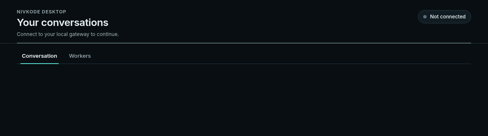
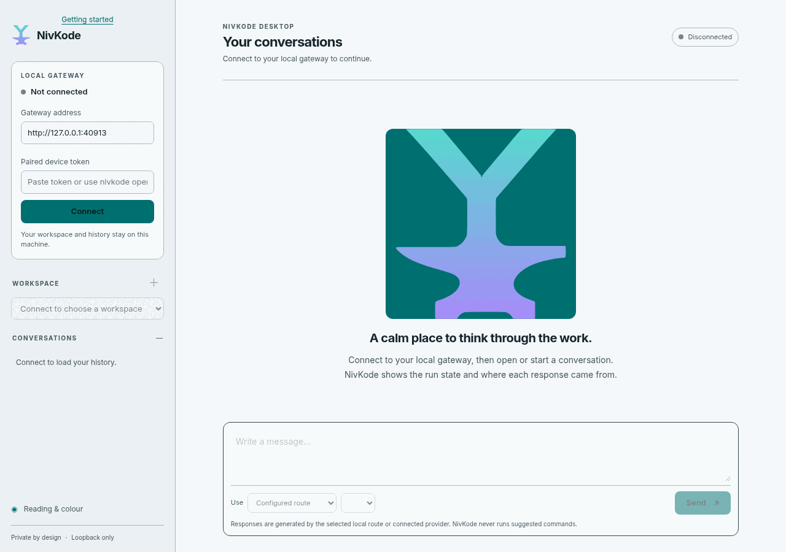
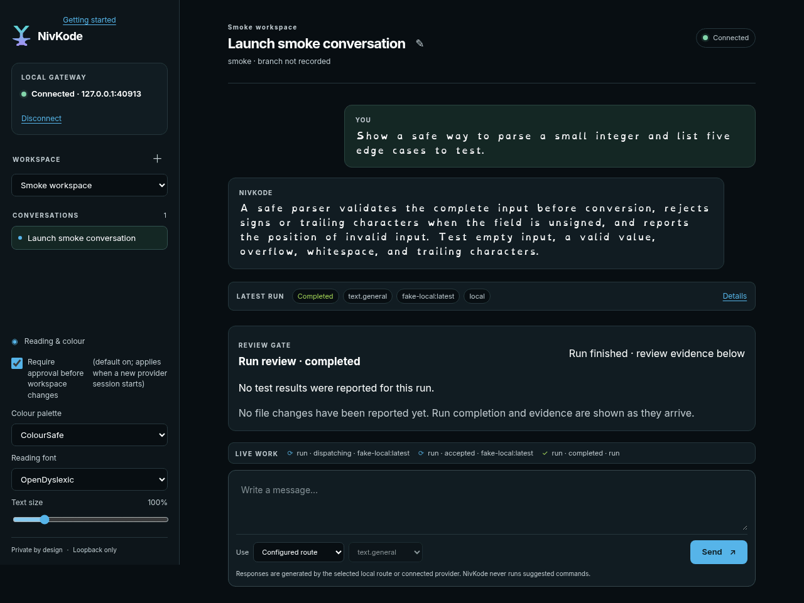

NivKode 0.2.0-beta.7
NivKode is a Linux app for working with local models and external AI providers. A local model can answer questions, read workspace files, and propose file changes and supported commands. You review and approve each change.
The launch note button opens your own email app with a message to us. This page stores nothing.
Choose a local model or an external AI provider
Local model. Tested on earlier builds; beta.7 live use: Not yet tested.
External AI provider (e.g. Codex, Claude, Grok). When you choose an external AI provider, the conversation is sent to that provider. Tested on earlier builds; beta.7 live use: Not yet tested.
Download NivKode 0.2 beta
Linux x86_64 archive: nivkode-gateway-0.2.0-beta.7-g36aae7fbf4f0-linux-x86_64.tar.gz
SHA-256: a9e0ab91eba90ba78ee3fb993076c0447cb6c8ea867f28ae4b01c0de6545e7cc
Files: SHA256SUMS · SHA256SUMS.minisig
Verify the signed checksum file with minisign and the pinned public key:minisign -Vm SHA256SUMS -P RWSTLdUN4lyCUF75ANlaa4La4nvfZC8wvtuEeYLx0AxjR2sibpTjQmee
We will share a source link here if and when the source is made public.
Review proposed changes before they happen.

How it works.
- Local model. A local model can answer questions and read workspace files. We can propose file edits and supported project test and build commands. Changes are shown for review; commands run only after approval.
- Command-line approvals. Run
nivkode approve <conversation> <request>to accept one pending local request by its ID. This command accepts only; it does not prompt or decline requests. - Local only. The gateway refuses requests to external AI providers and external second opinions while the switch is on. Turning it on stops active external-provider runs.
Earlier previews
These images are from earlier candidates.


Provider testing
- Local model: Tested on earlier builds; beta.7 live use: Not yet tested.
- External AI provider (e.g. Codex, Claude, Grok): Tested on earlier builds; beta.7 live use: Not yet tested.
NivKode 0.2 beta
Released Friday 13 November 2026. We plan to make NivKode free during the beta period.
Download NivKode 0.2 beta